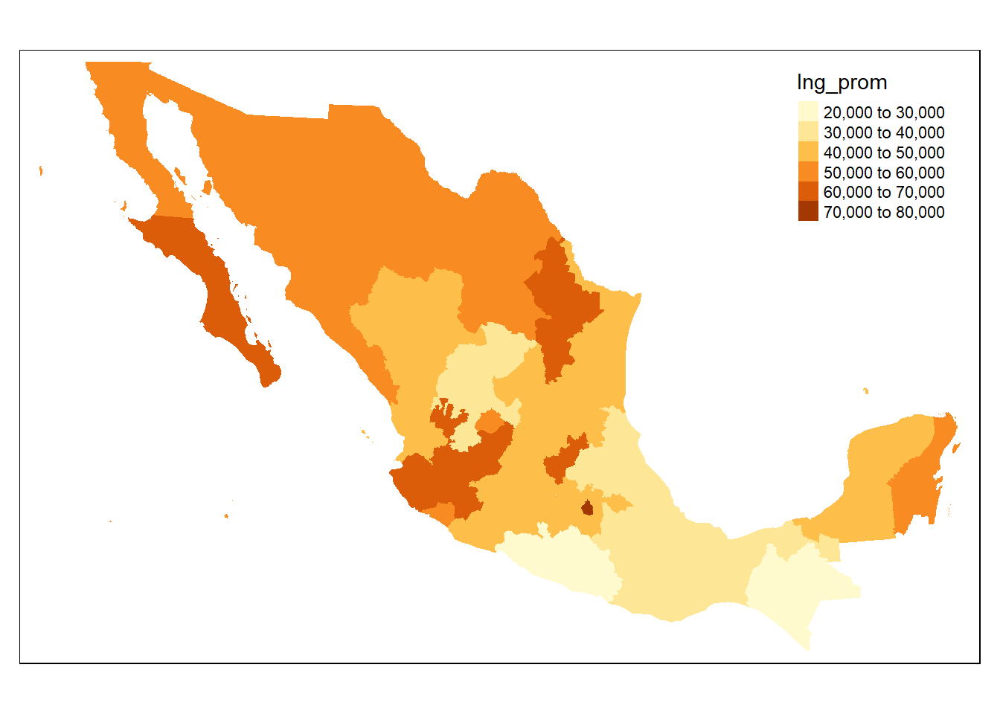

Mapas de INEGI en R
06 de julio del 2020
En este pequeño tutorial explico la manera más rápida y sencilla (a mi parecer) de crear mapas con el software R. Las únicas librerías necesarias son las siguientes:
pacman::p_load(
tidyverse, # para manupilar las bases de datos
sf, # para leer los archivos con datos geoespaciales
tmap # para hacer los mapas
)Bases de datos geoespaciales (del INEGI) en R
El INEGI proporciona muchos tipos de mapas de fácil acceso. Actualmente la ruta más corta es, una vez en el sitio del INEGI, ir a la pestaña Datos > Marco Geoestadístico y ahí descargar la versión más reciente del formato shape file, shp. Nótese que la versión completa pesa más de 3gb, por lo que debes dar click en la i para ver lo que contiene el archivo completo, y una vez ahí descargar el Marco Geoestadístico Inetegrado, que se refiere al país completo, en este caso utilizo la versión de septiembre de 2019.
El archivo descargado contiene 3 carpetas, la que nos interesa es la que se llama “conjunto_de_datos”, básicamente debes de poner esta carpeta en tu directorio de trabajo y listo. Sin embargo, aquí muestro cómo acceder al contenido de esta carpeta desde R de manera totalmente reproducible apartir de la descarga del INEGI (se enreda un poco porque quiero mantener todo en mi carpeta llamada “Bases” para no perder el orden):
- Con la función download.file() descargo el archivo, lo guardo dentro de mi carpeta Bases y lo llamo mapas_inegi.zip.
- Descomprimo el archivo con la función unzip().
- Analizo con la función dir() mis carpetas hasta encontrar el archivo que busco.
# Descargar el archivo con los mapas
download.file("http://internet.contenidos.inegi.org.mx/contenidos/productos/prod_serv/contenidos/espanol/bvinegi/productos/geografia/marcogeo/889463776079/mg_sep2019_integrado.zip",
destfile = "Bases/mapas_inegi.zip")
# Descomprimir el archivo
unzip("Bases/mapas_inegi.zip",
exdir = "Bases")
# Ver lo que tenemos la carpeta Bases; descomprimir el archivo creó la carpeta mg_sep2019_integrado
dir("Bases")## [1] "BIE_Des_Inf_2005-2019.csv" "ENIGH_concentradohogar_2018.csv"
## [3] "mapas_inegi.zip" "mg_sep2019_integrado"
## [5] "SIE_IPC_Cetes28_1990-2019.csv"# Ver el contenido de la carpeta mg_sep2019_integrado
dir("Bases/mg_sep2019_integrado")## [1] "catalogos" "conjunto_de_datos" "metadatos"# Ver el contenido de la carpeta "conjunto de datos"
dir("Bases/mg_sep2019_integrado/conjunto_de_datos")## [1] "00a.cpg" "00a.dbf" "00a.prj" "00a.shp" "00a.shx" "00ent.cpg"
## [7] "00ent.dbf" "00ent.prj" "00ent.shp" "00ent.shx" "00l.cpg" "00l.dbf"
## [13] "00l.prj" "00l.shp" "00l.shx" "00lpr.cpg" "00lpr.dbf" "00lpr.prj"
## [19] "00lpr.shp" "00lpr.shx" "00mun.cpg" "00mun.dbf" "00mun.prj" "00mun.shp"
## [25] "00mun.shx"¿Qué significan estos archivos? Los documentos de la carpeta catálogos explican que los nombres de archivos se conforman con las claves 00 y la capa con sufijos descriptivos del contenido del archivo, donde:
- 00ent Polígonos de Áreas Geoestadísticas Estatales;
- 00mun Polígonos de Áreas Municipales;
- 00a Polígonos de Áreas Geoestadísticas Básicas Urbanas y Rurales;
- 00l Polígonos de Localidades Urbanas y Rurales amanzanadas;
- 00lpr Puntos de Localidades Rurales amanzanadas y no amanzanadas.
Para trabajar en R los archivos que nos interesan son los shape file (con extensión .shp), estos son los que contienen la información geoespacial para crear los mapas. Existen diversas librerias en R especiales para trabajar con información geoespacial como rgdal, sp o sf, aquí utilizaremos esta última porque es la que simplifica más el trabajo.
Para cargar el mapa del INEGI utilizamos la función st_read de la librería sf (que debes instalar previamente), simplemente hay que indicarle la ruta del archivo, como se muestra a continuación. Nótese que este objeto tiene clase sf y dataframe, al ver las primeras observaciones nos damos cuenta que es como un data frame cualquiera, donde la variable geometry contiene la información necesaria para generar los mapas.
# Para cargar el mapa a nivel estatal
mapa_mex_edos <- st_read("Bases/mg_sep2019_integrado/conjunto_de_datos/00ent.shp",
options = "ENCODING=WINDOWS-1252")## options: ENCODING=WINDOWS-1252
## Reading layer `00ent' from data source `C:\Users\marur\Documents\GitHub\e-maruri.github.io\Bases\mg_sep2019_integrado\conjunto_de_datos\00ent.shp' using driver `ESRI Shapefile'
## Simple feature collection with 32 features and 3 fields
## geometry type: MULTIPOLYGON
## dimension: XY
## bbox: xmin: 911292 ymin: 319149.1 xmax: 4082997 ymax: 2349615
## projected CRS: MEXICO_ITRF_2008_LCC# Ver la clase del objeto
class(mapa_mex_edos)## [1] "sf" "data.frame"# Ver las primeras observaciones de la base de datos
head(mapa_mex_edos)## Simple feature collection with 6 features and 3 fields
## geometry type: MULTIPOLYGON
## dimension: XY
## bbox: xmin: 911292 ymin: 692158.7 xmax: 3859532 ymax: 2349615
## projected CRS: MEXICO_ITRF_2008_LCC
## CVEGEO CVE_ENT NOMGEO geometry
## 1 01 01 Aguascalientes MULTIPOLYGON (((2470518 115...
## 2 02 02 Baja California MULTIPOLYGON (((1493197 184...
## 3 03 03 Baja California Sur MULTIPOLYGON (((1694656 122...
## 4 04 04 Campeche MULTIPOLYGON (((3544897 946...
## 5 05 05 Coahuila de Zaragoza MULTIPOLYGON (((2469954 197...
## 6 06 06 Colima MULTIPOLYGON (((1157633 768...Ahora aprovechamos para cargar también la base de datos a nivel municipal para ver cómo se diferencia con la de nivel estatal. Del análisis de su estructura vemos que esta base de datos contiene 2465 observaciones, una por cada municipio. Destacan tres cosas: primero, que la columna CVEGEO es diferente pues ahora contiene 5 dígitos en vez de sólo 2; segundo, que hay una nueva columna con la clave de la entidad; y tercero, que l nombre del estado ha desaparecido dejando lugar sólo al nombre de cada municipio.
# Para cargar el mapa a nivel municipal
mapa_mex_mun <- st_read("Bases/mg_sep2019_integrado/conjunto_de_datos/00mun.shp",
options = "ENCODING=WINDOWS-1252")## options: ENCODING=WINDOWS-1252
## Reading layer `00mun' from data source `C:\Users\marur\Documents\GitHub\e-maruri.github.io\Bases\mg_sep2019_integrado\conjunto_de_datos\00mun.shp' using driver `ESRI Shapefile'
## Simple feature collection with 2465 features and 4 fields
## geometry type: MULTIPOLYGON
## dimension: XY
## bbox: xmin: 911292 ymin: 319149.1 xmax: 4082997 ymax: 2349615
## projected CRS: MEXICO_ITRF_2008_LCC# Ver la estructura de la base de datos
str(mapa_mex_mun)## Classes 'sf' and 'data.frame': 2465 obs. of 5 variables:
## $ CVEGEO : Factor w/ 2465 levels "01001","01002",..: 1 2 3 4 5 6 7 8 9 10 ...
## $ CVE_ENT : Factor w/ 32 levels "01","02","03",..: 1 1 1 1 1 1 1 1 1 1 ...
## $ CVE_MUN : Factor w/ 570 levels "001","002","003",..: 1 2 3 4 5 6 7 8 9 10 ...
## $ NOMGEO : Factor w/ 2323 levels "Abalá","Abasolo",..: 36 128 240 436 766 1081 1178 1346 1992 527 ...
## $ geometry:sfc_MULTIPOLYGON of length 2465; first list element: List of 1
## ..$ :List of 1
## .. ..$ : num [1:1688, 1:2] 2489073 2489353 2489350 2489302 2489277 ...
## ..- attr(*, "class")= chr "XY" "MULTIPOLYGON" "sfg"
## - attr(*, "sf_column")= chr "geometry"
## - attr(*, "agr")= Factor w/ 3 levels "constant","aggregate",..: NA NA NA NA
## ..- attr(*, "names")= chr "CVEGEO" "CVE_ENT" "CVE_MUN" "NOMGEO"Visualizar mapas descargados
Hay varias librerias que sirven para hacer mapas, una de ellas es ggplot que incluye varias funciones especiales para ello, aquí un breve tutorial con datos sobre COVID y aquí un tutorial del Instituto Mora (aunque utiliza la librería rgdal para leer los archivos .shp que complica las cosas, además está bastante desactualizado). Un ejemplo con los datos espaciales del INEGI:
mapa_mex_edos %>%
ggplot() +
geom_sf()Otra librería para hacer mapas es tmap, esta fue creada especialmente para hacer mapas y me parece que su sintaxis es más sencilla que la de ggplot por lo que será la que usaremos en adelante. Aquí un ejemplo del mismo mapa hecho antes:
tm_shape(mapa_mex_edos) +
tm_borders() 
Mapear datos de la ENIGH
La Encuesta Nacional de Ingresos y Gastos de los Hogares (ENIGH) es una de las encuestas más importantes de información económica en nuestro país, si quieres saber más sobre qué es, cómo descargarla y cómo utilizarla aquí te dejo una breve introducción que hice.
Primero cargamos la ENIGH y extraemos las columas que nos interesan. Para el caso de los mapas quizá la más relevante es la columna ubica_geo, que contiene la ubicación geográfica de la vivienda, los dos primeros dígitos representan la clave de la entidad y los siguientes tres la clave del municipio (éstas son análogas en todos los documentos del INEGI).
La idea básica para “mapear” datos en R consiste en unir o empatar los datos de interés a la base con la información geográfica y luego tmap se encarga del resto, para ello ambas bases deben tener alguna característica en común como puede ser el nombre del estado de la república o un número de identificación como en este caso.
Un problema con la información de ubicación geográfica entre la ENIGH y los datos espaciales que descargamos es que en estos últimos aparece un 0 antes del primer dígito, el cual no aparece en la columna ubica_geo, y ambas columnas deben de coincidir para poder unir los datos. A continuación una posible solución.
# Cargamos la ENIGH
ENIGH <- read.csv("Bases/ENIGH_concentradohogar_2018.csv")
# Seleccionamos sólo tres variables y creamos una adicional para ponerle el identificador por estado
ENIGH1 <- ENIGH %>%
select(ubica_geo, factor, tot_integ, ing_cor) %>%
mutate(CVE_ENT = 0)
# Extraemos de la columna ubica_geo los identificadores de cada estado y los guardamos en la columna CVE_ENT
for (j in 1:nrow(ENIGH1)) {
if( nchar(ENIGH1$ubica_geo[j] ) < 5){
ENIGH1$CVE_ENT[j] <- paste0("0", substr(ENIGH1$ubica_geo[j], start = 1, stop = 1))
} else {
ENIGH1$CVE_ENT[j] <- substr(ENIGH1$ubica_geo[j], start = 1, stop = 2)
}
}
# Convertimos la columna CVE_ENT en factor para que coincida con el de la base mapa_mex_edos
ENIGH1$CVE_ENT <- as.factor(ENIGH1$CVE_ENT)Ahora sólo nos faltan los datos que queremos mapear, para esto necesitamos que tengan el mismo número de observaciones ambas bases, en este caso 32, una para cada estado de la república mexicana. En este ejemplo usaremos el ingreso promedio de cada estado (ponderado con el factor de expansión, claro) y la población total por estado, ya que son fáciles de calcular.
# Calculamos el ingreso promedio ponderado por estado y lo guardamos en una nueva base
ENIGH_edos <- ENIGH1 %>% group_by(CVE_ENT) %>%
summarize(Ing_prom = weighted.mean(ing_cor, factor),
Poblacion = sum(factor*tot_integ))Unir datos entre bases
El último paso antes de hacer un mapa coroplético es pegarle los datos de la base que queremos mapear a la base con datos espaciales. Esto lo realizamos con las funciones que tidyverse tiene para unir datos entre distintas bases. Existen dos familias básicas de verbos diseñadas para relacionar datos entre distintos data frames:
Uniones de transformación (del inglés mutating joins), que agregan nuevas variables a un data frame a partir de las observaciones coincidentes en otra tabla.
Uniones de filtro (del inglés filtering joins), que filtran observaciones en un data frame con base en si coinciden o no con una observación de otra tabla.
Sean X y Y dos dataframes:
| Familia | Verbo | Acción |
|---|---|---|
| mutating joins | inner join | mantiene todas las observaciones que aparecen en X y Y. |
| mutating joins | left join | mantiene todas las observaciones en X. |
| mutating joins | right join | mantiene todas las observaciones en Y. |
| mutating joins | full join | mantiene todas las observaciones en X e Y. |
| filtering joins | semi join | mantiene todas las observaciones en x con coincidencias en Y. |
| filtering joins | anti join | descarta todas las observaciones en x con coincidencias en Y. |
Como tenemos 32 observaciones en cada data frame que queremos unir, una por cada estado, el resultado será el mismo al usar cualquiera de los primeros 5 verbos de la tabla anterior. La sintaxis básica para el usar estos verbos se muestra a continuación.
# Replicamos la base original para poder regresar a ella por si nos equivocamos
mapeo_edos <- mapa_mex_edos
# Pegamos los datos de ENIGH_edos al dataframe "mapeo_edos" con la función inner_join
mapeo_edos <- inner_join(mapa_mex_edos, ENIGH_edos,
by = "CVE_ENT")
# Confirmamos que se han pegado los datos correctamente
head(mapeo_edos)## Simple feature collection with 6 features and 5 fields
## geometry type: MULTIPOLYGON
## dimension: XY
## bbox: xmin: 911292 ymin: 692158.7 xmax: 3859532 ymax: 2349615
## projected CRS: MEXICO_ITRF_2008_LCC
## CVEGEO CVE_ENT NOMGEO Ing_prom Poblacion
## 1 01 01 Aguascalientes 59346.35 1342587
## 2 02 02 Baja California 59177.74 3648116
## 3 03 03 Baja California Sur 68778.27 839675
## 4 04 04 Campeche 47699.92 952279
## 5 05 05 Coahuila de Zaragoza 55924.79 3073513
## 6 06 06 Colima 52765.77 763300
## geometry
## 1 MULTIPOLYGON (((2470518 115...
## 2 MULTIPOLYGON (((1493197 184...
## 3 MULTIPOLYGON (((1694656 122...
## 4 MULTIPOLYGON (((3544897 946...
## 5 MULTIPOLYGON (((2469954 197...
## 6 MULTIPOLYGON (((1157633 768...Primer mapa coroplético (a nivel estatal)
Una vez en este punto es fácil realizar el mapa coroplético, simplemente hay que usar la función tm_fill de la libreria tmap como se muestra a continuación:
# Primer mapa
tm_shape(mapeo_edos) +
tm_fill(col = "Ing_prom")
El mismo mapa con ggplot se hace con el siguiente código:
mapeo_edos %>%
ggplot(aes(fill=Ing_prom)) +
geom_sf()Segundo mapa coroplético (a nivel municipal)
Para crear un mapa a nivel municipal se realiza exactamente el mismo proceso pero con los datos municipales.
# Respaldo
mapeo_mun <- mapa_mex_mun
# Crear a base con datos de la ENIGH a nivel municipal
ENIGH_muni <- ENIGH1 %>% group_by(ubica_geo) %>%
summarize(Ing_prom = weighted.mean(ing_cor, factor),
Poblacion = sum(factor*tot_integ)) %>%
mutate(CVEGEO = 0)
# Extraemos de la columna ubica_geo los identificadores de cada estado y los guardamos en la columna CVEGEO
for (j in 1:nrow(ENIGH_muni)) {
if( nchar(ENIGH_muni$ubica_geo[j] ) < 5){
ENIGH_muni$CVEGEO[j] <- paste0("0", substr(ENIGH_muni$ubica_geo[j], start = 1, stop = 5))
} else {
ENIGH_muni$CVEGEO[j] <- substr(ENIGH_muni$ubica_geo[j], start = 1, stop = 5)
}
}
# Convertimos la columna CVE_ENT en factor para que coincida con el de la base mapa_mex_mun
ENIGH_muni$CVEGEO <- as.factor(ENIGH_muni$CVEGEO)
# Ver la estructura
str(ENIGH_muni)## Classes 'tbl_df', 'tbl' and 'data.frame': 996 obs. of 4 variables:
## $ ubica_geo: int 1001 1002 1003 1005 1006 1007 1008 1009 1010 1011 ...
## $ Ing_prom : num 63228 56885 39087 61712 55475 ...
## $ Poblacion: int 865543 34808 52511 106863 56027 77549 18732 28497 37877 64180 ...
## $ CVEGEO : Factor w/ 996 levels "01001","01002",..: 1 2 3 4 5 6 7 8 9 10 ...# Se observa que sólo hay observaciones para 996 municipios, por lo que pegamos los datos de ENIGH_muni al dataframe "mapeo_mun" con la función left_join
mapeo_mun <- left_join(mapa_mex_mun, ENIGH_muni,
by = "CVEGEO")Para crear el mismo mapa del ingreso promedio pero ahora a nivel municipal:
tm_shape(mapeo_mun) +
tm_fill(col="Ing_prom")Nótese que los municipios en gris son los que no fueron considerados en la ENIGH de 2018, esto porque sólo se hace a nivel municipal en los años múltiplos del 5 (2000, 2005, etc.). De la parte en color distinto al gris se observa que el mapa presenta prácticamente un solo color, esto se debe a que hay una observación bastante atípica.
Para ver cuál es y eliminarla para que el mapa se vea más decente primero ordenamos la base por ingreso promedio:
# Primeras observaciones de la base ordenada por ingreso promedio
head(ENIGH_muni %>% arrange(desc(Ing_prom)), n=10)## # A tibble: 10 x 4
## ubica_geo Ing_prom Poblacion CVEGEO
## <int> <dbl> <int> <fct>
## 1 19019 572792. 54585 19019
## 2 9014 217543. 476547 09014
## 3 9016 131095. 342772 09016
## 4 20414 129800. 33280 20414
## 5 8054 126475. 11340 08054
## 6 30206 108143. 56440 30206
## 7 28005 107689. 40778 28005
## 8 9010 102347. 624115 09010
## 9 22006 101982. 174571 22006
## 10 15037 98068. 269774 15037# Para ver qué municipio es el 19019
mapeo_mun %>% filter(ubica_geo == 19019)## Simple feature collection with 1 feature and 7 fields
## geometry type: MULTIPOLYGON
## dimension: XY
## bbox: xmin: 2657066 ymin: 1505565 xmax: 2668631 ymax: 1519350
## projected CRS: MEXICO_ITRF_2008_LCC
## CVEGEO CVE_ENT CVE_MUN NOMGEO ubica_geo Ing_prom
## 1 19019 19 019 San Pedro Garza García 19019 572791.7
## Poblacion geometry
## 1 54585 MULTIPOLYGON (((2657500 151...El municipio que causa problemas es el de San Pedro Garza García en Nuevo León (19019), pues tiene un ingreso promedio más de 300 mil pesos por encima de su perseguidor más cercano, así que le asignamos NA para dejarlo fuera de la base y no altere el mapa.
# Conocer la observación con el max ingreso promedio
which.max(ENIGH_muni$Ing_prom)## [1] 518# Sustituir esa observación por NA
ENIGH_muni$Ing_prom[518] <- NA
# Volver a unir los datos entre bases
mapeo_mun <- left_join(mapa_mex_mun, ENIGH_muni,
by = "CVEGEO")Ahora volvemos a hacer el mismo mapa de antes:
tm_shape(mapeo_mun) +
tm_fill(col="Ing_prom")Ni siquiera así quedó bonito el mapa, así que ahora lo hacemos con la población total por municipio implítica en la ENIGH:
tm_shape(mapeo_mun) +
tm_fill(col="Poblacion")Tercer mapa coroplético (municipios de un solo Estado)
Para hacer mapas con los datos de un sólo Estado basta con crear un nuevo data frame filtrando las observaciones del estado que se desee. Por ejemplo, para el caso de Aguascaliententes con CVE_ENT = 01 es así:
# Crear un mapa sólo con los datos de ags
mapa_ags <- mapeo_mun %>% filter(CVE_ENT == "01")
# Mapa coroplético de Ags.
tm_shape(mapa_ags)+
tm_fill(col = "Ing_prom")+
tm_borders()Ahora para la CDMX:
# Filtramos CDMX
mapa_cdmx <- mapeo_mun %>% filter(CVE_ENT == "09")
# Mapeamos
tm_shape(mapa_cdmx)+
tm_fill(col = "Ing_prom")+
tm_borders()Tunear los mapas
Por supuesto, siempre hay mucho que añadir a la versión por defecto del mapa para que se vea presentable. Aquí un ejemplo de cómo modficar el código del primer mapa para quede más bonito:
tm_shape(mapeo_edos) +
tm_fill(col = "Ing_prom",
title = "Miles de pesos",
palette = "Greens",
labels = c("20 a 30", "30 a 40", "40 a 50",
"50 a 60", "60 a 70", "70 a 80")) +
tm_borders(col = "grey60",
lwd = 0.5) +
tm_layout(main.title = "Ingreso promedio trimestral por Estado, 2018",
main.title.position = "center",
frame = F) +
tm_credits("Fuente: elaboración propia con datos de la ENIGH, INEGI.",
position = c("left", "bottom"))Ahora tuneamos el mapa de población a nivel municipal:
tm_shape(mapeo_mun) +
tm_fill(col="Poblacion",
title = "Miles de personas",
palette = "viridis",
labels = c("1 a 500", "500 a 1,000",
"1,000 a 1,500", "1,500 a 2,000"),
textNA = "No disponible",
colorNA = "red") +
tm_layout(main.title = "Población por municipio implícita en la ENIGH, 2018",
main.title.position = "center",
frame = F) +
tm_credits("Fuente: elaboración propia con datos de la ENIGH, INEGI.",
position = c("left", "bottom"))Finalemente, tuneamos el mapa de las delegaciones para mostrar cómo es que se puede poner el nombre a cada observación (para este fin fue que utilizamos el argumento options = “ENCODING=WINDOWS-1252” al cargar las bases de los mapas, pues de no hacerse así no reconoce adecuadamente los acentos).
tm_shape(mapa_cdmx) +
tm_fill(col = "Ing_prom",
title = "Miles de pesos",
palette = "RdYlGn",
labels = c("0 a 50", "50 a 100", "100 a 150",
"150 a 200", "200 a 250")) +
tm_borders() +
tm_text(text = "NOMGEO",
col = "black",
scale = 0.5,
remove.overlap = F,
just = "top") +
tm_layout(main.title = "CDMX: ingreso promedio trimestral por delegación, 2018",
main.title.position = "center",
main.title.size = 1.2,
legend.outside = T,
frame = F) +
tm_credits("Fuente: elaboración propia con datos de la ENIGH, INEGI.",
position = c("LEFT", "BOTTOM"))Para ver las distintas paletas de colores disponibles utiliza el siguiente código:
# install.packages("shinyjs")
# tmaptools::palette_explorer()Contacto
Copyright © 2020 Emmanuel Maruri